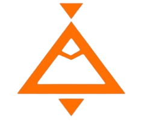
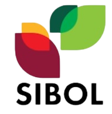
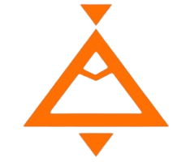
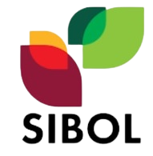
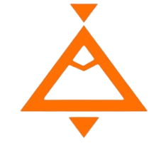
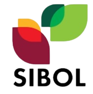

OFFICIAL PARTNERS


 





The “ICONnect: Digital Marketing” was held on March 17, 2022 via Zoom and Facebook Live. It is the first webinar event from the newly launched branded webinar program ICONnect.
Ms. Monah Martinez started her presentation by giving a background about herself and about her business. She mentioned how she started from scratch to sustain her business. She also shared her knowledge about her forte, Online Selling. Online selling is a great help for her and for her business. She enumerated the advantages of online selling and how and where to start. As per Ms. Monah, “goals and target market must be identified if you wanted to start your online business”. She also shared her different marketing strategies through social media platforms and gave examples on how to properly execute it.
ICONnect aims to gather the community or the general public to create awareness, cultivate their interests and encourage people to take part in elevating the startup ecosystem in South Luzon.

